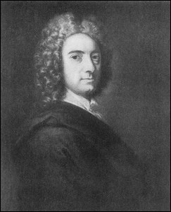

|

Покончив с возражениями, которые я старался изложить как можно яснее и придать им всю ту силу и тот вес, какие я только мог, обратимся ближайшим образом к последствиям наших положений. Некоторые из них бросаются тотчас в глаза, так как те различные затруднительные и темные вопросы, на которые потрачено много рассуждений, совершенно изгоняются из философии. "Может ли телесная субстанция мыслить", "Делима ли материя до бесконечности" и "Как она действует на дух" – эти и подобные этим вопросы во все времена давали бесчисленные занятия философам, но, завися от существования материи, не имеют более места при признании наших принципов. Есть много других преимуществ и для религии, и для наук, которые легко может вывести всякий из того, что предпослано, но это обнаружится яснее в дальнейшем изложении.
Из вышеизложенных нами начал следует, что человеческое знание естественно разделяется на две области – знание идей и знание духов; о каждой из них скажу по порядку, и, во-первых, об идеях, или немыслящих вещах. Наше познание их было чрезвычайно затемнено, запутано, направлено к самым опасным заблуждениям предположением о двойном (twofold) существовании чувственных объектов, именно: одно существование – интеллигибельное или существование в уме, другое – реальное, вне ума, вследствие чего немыслящие вещи признавались имеющими естественное существование сами по себе, отличное от их воспринимаемости духами. Это мнение, неосновательность и нелепость которого, если я не ошибаюсь, была мной доказана, открывает прямой путь к скептицизму, потому что, пока люди думают, что реальные вещи существуют вне духа и что их знание реально лишь постольку, поскольку оно соответствует реальным вещам, до тех пор оказывается, что не может быть удостоверено, есть ли вообще какое-нибудь реальное знание. Ибо каким образом можно узнать, что воспринимаемые вещи соответствуют вещам невоспринимаемым или существующим вне духа? Цвет, форма, движение, протяжение и т.п., рассматриваемые нами только как ощущения духа, вполне известны, так как в них нет ничего, что не было бы воспринимаемо. Но если на них смотреть как на знаки или изображения, относящиеся к вещам или первообразам вещей, существующим вне духа, то мы все впадаем в скептицизм. Мы наблюдаем только видимость, а не реальные качества вещей. Что такое протяженность, форма или движение чего-либо реально и безусловно или сами в себе, нам невозможно знать, но возможно знать лишь пропорцию или отношение их к нашим ощущениям. Вещи остаются теми же самыми, а наши идеи изменяются, и какие из этих идей представляют и представляют ли какие-либо из них истинное качество, действительно существующее в вещи, – решение этого вопроса превышает наши силы. Таким образом, насколько мы можем судить, все, что мы видим, слышим и осязаем, есть, вероятно, лишь призрак и пустая химера и никоим образом не согласуется с действительными вещами, существующими в rerum natura. Весь этот скептицизм вытекает из предположения, будто существует различие между вещами и идеями и будто первые имеют бытие вне духа или существуют невоспринимаемые. Было бы легко распространиться на эту тему и показать, в какой мере аргументы, употребляемые скептиками во все времена, зависели от предположения внешних предметов. Но это слишком явно для того, чтобы на нем стоило настаивать. Покуда мы приписываем немыслящим вещам действительное существование, отличное от их воспринимаемости, для нас не только невозможно познать с очевидностью природу какой-нибудь реальной немыслящей вещи, но даже и то, что подобная вещь существует. От этого и происходит, как мы видим, что философы не доверяют своим ощущениям и сомневаются в существовании неба и земли и всего, что они видят и осязают, и даже своих собственных тел. И после всей их тяжелой работы и борьбы мысли они вынуждены сознаться, что мы не в состоянии достигнуть самоочевидного или основанного на доказательствах познания существования ощущаемых вещей. Но вся эта сомнительность, столь путающая и смущающая ум и делающая философию смешной в глазах света, исчезает, если мы придадим нашим словам смысл и не будем забавляться терминами "абсолютное", "внешнее", "существовать" и т.п., выражающими мы сами не знаем что. Что касается меня, то я в той же мере могу сомневаться в своём собственном бытии, как и в бытии тех вещей, которые я действительно воспринимаю в ощущениях; было бы явным противоречием предполагать, что какой-нибудь ощущаемый предмет непосредственно воспринимается зрением или осязанием и в то же время не имеет существования в природе, так как действительное существование немыслящей вещи состоит в ее воспринимаемости. Ничто не может иметь более важного значения для обоснования твердой системы здравого и истинного знания, могущего быть доказанным вопреки нападкам скептицизма, как начало исследования с объяснения того, что понимается под словами: вещь, реальность, существование; потому что тщетно станем мы спорить о реальном существовании вещей или притязать на какое-либо их познание, пока не установим прочно смысла этих слов. Вещь, или сущее, есть самое общее из всех имен; оно обнимает собой два совершенно различных и разнородных разряда, не имеющих между собой ничего общего, кроме названия, а именно духов и идей. Первые суть деятельные, неделимые, неистребимые субстанции, вторые – косные, мимолетные, преходящие состояния, зависимые сущие, которые существуют не сами по себе, но имеют носителей или существуют в духах или духовных субстанциях Идеи, запечатленные в ощущениях, суть реальные вещи или реально существуют; этого мы не отрицаем, но мы отрицаем, чтобы они были подобиями первообразов, существующих вне духа, так как действительное бытие ощущения или идеи состоит в воспринимаемости и идея не может походить ни на что иное, кроме идеи. Далее, вещи, воспринимаемые в ощущениях, могут быть названы внешними по отношению к их происхождению, поскольку они порождаются не изнутри самим духом, а запечатлеваются в нем духом, отличным от того, который их воспринимает. Ощущаемые предметы могут быть названы находящимися "вне духа" еще в другом смысле, а именно когда они существуют в каком-либо другом духе; так, когда я закрываю глаза, то вещи, которые я видел, могут продолжать существовать, но только в другом духе. Было бы ошибкой думать, будто сказанное здесь хоть сколько-нибудь отрицает реальность вещей. Признано, согласно господствующим началам, что протяжение, движение, одним словом, все ощущаемые качества нуждаются в носителе, так как существовать сами по себе не могут. Однако соглашаются с тем, что воспринимаемые в ощущениях предметы суть не что иное, как комбинации этих качеств, и, следовательно, не могут существовать сами по себе. До этого пункта все согласны. Поэтому, отрицая, что воспринимаемые в ощущениях вещи имеют существование, независимое от субстанции или носителя, в котором они могут существовать, мы ничего не отрицаем из господствующего мнения об их реальности и не виновны ни в каком новшестве в этом отношении. Все разногласие состоит в том, что, по нашему мнению, немыслящие и воспринимаемые в ощущениях вещи не имеют отличного от их воспринимаемости существования и не могут поэтому существовать ни в какой другой субстанции, кроме тех непротяженных, неделимых субстанций, или духов, которые действуют, мыслят и воспринимают вещи, тогда как философы, согласно с мнением толпы, признают, что ощущаемые качества существуют в некоторой косной, протяженной и невоспринимающей субстанции, которую они называют материей, приписывая ей естественное существование, отличное от воспринимаемости каким бы то ни было духом, даже вечным духом творца, в котором они предполагают лишь идеи созданных им телесных субстанций, если только эти субстанции вообще признаются созданными. Ибо, что было показано, на основе учения о материи, или телесной субстанции, воздвигнуты были все безбожные построения атеизма и отрицания религии. Да, так трудно было для мысли понять, что материя создана из ничего, что самые знаменитые из древних философов, даже те, которые признавали бытие бога, считали материю несозданной, совечной ему. Нет надобности рассказывать о том, каким великим другом атеистов во все времена была материальная субстанция. Все их чудовищные системы до того очевидно, до того необходимо зависят от нее, что, раз будет удален этот краеугольный камень, – и все здание неминуемо развалится. Нам не к чему поэтому уделять особое внимание абсурдным учениям отдельных жалких сект атеистов. Что нечестивые и суетные люди охотно соглашаются с такими системами, которые благоприятствуют их склонностям, глумясь над нематериальной субстанцией и предполагая, что душа делима и так же подвержена гибели, как и тело, - с системами, которые исключают всякую свободу, ум и намерение в создании вещей и вместе с тем принимают за корень и источник всех вещей саму по себе существующую, немыслящую и бессмысленную субстанцию; что такие люди прислушиваются к тем, кто отрицает провидение, руководство со стороны верховного духа делами мира, приписывая весь ряд событий либо слепому случаю, либо роковой необходимости, вытекающей из воздействия одного тела на другое, – все это вполне естественно. И если, с другой стороны, люди лучших принципов замечают, что враги религии приписывают такое большое значение немыслящей материи и прилагают так много старания и искусства к тому, чтобы все свести к ней, то первые, полагаю, должны радоваться при виде того, что вторые лишились своей сильной опоры и вытеснены из той их единственной крепости, вне которой ваши эпикурейцы, гоббисты и им подобные не могут иметь тени притязания на победу и должны уступить ее быстро и легко. Существование материи или вещей, невоспринимаемых, было не только главной опорой атеистов и фаталистов, но на этом же самом принципе держится идолопоклонничество во всех своих разнообразных формах. Если бы люди сообразили, что Солнце, Луна и звезды и все прочие чувственные предметы суть не что иное, как ощущения в их духах, не имеющие иного существования, кроме воспринимаемости, то они, без сомнения, не стали бы преклоняться перед своими собственными идеями и обожать их, но скорее обратили бы свое почитание к тому вечному, невидимому духу, который создал и поддерживает все вещи. То же самое нелепое начало причинило христианам немало затруднений, примешиваясь к предметам нашей веры. Например, касательно воскресения сколько сомнений и возражений было возбуждено социнианами и другими? Но разве самые веские из этих возражений не зависят от предположения, будто тело может быть названо тем же самым относительно не его формы или того, что воспринимается в ощущениях, а материальной субстанции, которая остается одной и той же под различными формами? Отбросьте эту материальную субстанцию – о тождестве которой идет весь спор – и понимайте под телом то, что понимается каждым обыкновенным простым человеком, а именно непосредственно видимое и осязаемое, составляющее лишь соединение чувственных качеств или идей, и тогда все их наиболее неопровержимые возражения сведутся на нет. Материя, раз она будет изгнана из природы, уносит с собой столько скептических и безбожных построений, такое невероятное количество споров и запутанных вопросов которые были бельмом в глазу для теологов и философов; материя причиняла столько бесплодного труда роду человеческому, что если бы даже те доводы, которые мы выдвинули против нее, были признаны недостаточно доказательными (что до меня, то я их считаю вполне очевидными), то все же я уверен, что все друзья истины, мира и религии имеют основание желать, чтобы эти доводы были признаны достаточными. Наряду с внешним существованием предметов восприятия другим обильным источником заблуждений и затруднений по отношению к идеальному познанию служит учение об абстрактных идеях, как оно изложено во Введении. Самые ясные вещи в мире, с которыми мы вполне освоились и которые нам совершенно известны, становятся странным образом затруднительными и непонятными, когда мы рассматриваем их абстрактно. Время, место и движение, взятые частно и конкретно, суть то, что всякий знает; но, пройдя через руки метафизика, они становятся слишком абстрактными и утонченными для понимания людей с обычными способностями. Прикажите вашему слуге ожидать вас в такое-то время в таком-то месте, и он никогда не остановится на размышлении о значении этих слов; в представлении тех частных времени, места и движения, посредством которого нужно туда идти, он не находит ни малейшего затруднения. Но если время будет взято с исключением всех тех частных действий и идей, которыми устанавливается разнообразие дня, только как непрерывность существования или продолжительность, понимаемая абстрактно, то оно, быть может, затруднит и философа в его понимании. Со своей стороны, каждый раз, когда я пытался составить простую идею времени с абстрагированием от последовательности идей в моем духе, которое протекает единообразно и сопричастно всему сущему, я терялся и путался в безысходных затруднениях. Я вовсе не имею понятия о нем; я слышу только от других, что оно до бесконечности делимо, и их речи таковы, что возбуждают во мне странные мысли о моем существовании; так как это учение требует от каждого как безусловной необходимости мысли, признания или того, что он провел бесчисленные годы без мысли, или что он уничтожается в каждое мгновение своей жизни; и то, и другое представляется одинаково нелепым. Поэтому так как время есть ничто, если абстрагировать от него последовательность идей в нашем духе, то из этого вытекает, что продолжительность некоторого конечного духа должна быть определена по количеству идей или действий, которые следуют друг за другом в этом духе. Отсюда вытекает явное следствие, что душа мыслит постоянно; и в самом деле, всякий, кто попытается отделить в своих мыслях или абстрагировать существование духа от его мышления, найдет, я полагаю, эту задачу нелегкой. Точно так же, когда мы пытаемся абстрагировать протяжение и движение от всех других качеств и рассматривать их сами по себе, мы немедленно теряем их из виду и впадаем в большие нелепости. Отсюда проистекают странные парадоксы, вроде того, что "огонь не горяч", "стена не бела" и т.п. или что тепло и свет в предметах суть не что иное, как форма и движение. Все это зависит от двойной абстракции: во-первых, предполагается, например, что протяжение может быть абстрагировано от всех прочих ощущаемых качеств и, во-вторых, что бытие протяжения может быть абстрагировано от его воспринимаемости. Но всякий, кто поразмыслит и постарается понять то, что он говорит, признает, если я не ошибаюсь, что все ощущаемые качества суть равно ощущения и равно реальны, что там же, где находится протяжение, находится и цвет, т.е. в его духе, и что их первообразы могут существовать лишь в некотором другом духе, и что предметы ощущений суть не что иное, как эти же ощущения, соединенные, смешанные или (если можно так выразиться) сросшиеся вместе; ни один из них не может быть предположен как существующий невоспринятым. И что, следовательно, в действительности стена бела столь же, сколь и протяженна, и в том же самом смысле. Что значит для какого-нибудь человека быть счастливым или для предмета – добрым, каждый полагает, что это ему известно. Но составить абстрактную идею счастья, отрешенную от всякого частного удовольствия, или идею добра, отрешенную от всего, что является добрым, – на это немногие могут притязать. Точно так же человек может быть справедлив и добродетелен, не обладая точными идеями справедливости и добродетели. Мнение, будто эти и подобные им слова выражают общие понятия, абстрагированные от всех отдельных людей и действий, по-видимому, весьма затруднило мораль и сделало учение о ней мало полезным для человечества. И в самом деле можно сделать большие успехи в школьной этике, не став от того мудрее и лучше и не приобретя знания, каким образом действовать в житейских делах с большей пользой для себя и для своих ближних, чем действовал ранее. Этого указания достаточно для обнаружения того, что учение об абстрагировании немало способствовало опустошению самой полезной части знания. A.A. |